Biological applications often need to compare the DNA of two (or more) different organisms. A strand of DNA consists of a string of molecules called bases, where the possible bases are adenine, guanine, cytosine, and thymine. Representing each of these bases by its initial letter, we can express a strand of DNA as a string over the finite set {A,C,G,T}.
这是生物学应用中最为常见的“最长公共子序列问题”。
能够用动态规划解决的问题，通常具有两种属性：第一，存在最优子结构，即可以用“剪切，粘帖”的方法来证明；第二，具有重叠子问题。
在矩阵链乘法的问题中，可以使用递归和穷举两种方法来解决最优的括号化方案。其中，对每一种方案计算乘法运算次数。
用穷举法的时候，表中的每一个节点都必须访问，记访问一个节点的时间为b k b_k b k b n = ∑ k = 0 n − 1 b k b n − 1 − k b_n= \sum_{k=0}^{n-1}b_kb_{n-1-k} b n = ∑ k = 0 n − 1 b k b n − 1 − k
该递推式符合卡特兰数，可以推出通项公式为：b ( n ) = 4 n π n 3 / 2 ( 1 + O ( 1 / n ) ) b(n)=\frac{4^n}{\sqrt{\pi}n^{3/2}}(1+O(1/n)) b ( n ) = π n 3 / 2 4 n ( 1 + O ( 1 / n ) )
用Recursive-Matrix-Chain递归求解，递推式符合T ( n ) ≥ 1 + ∑ k = 1 n − 1 ( T ( k ) + T ( n − k ) + 1 ) n > 1 T(n)\geq1+\sum_{k=1}^{n-1}(T(k)+T(n-k)+1) \qquad n>1 T ( n ) ≥ 1 + ∑ k = 1 n − 1 ( T ( k ) + T ( n − k ) + 1 ) n > 1 T ( n ) ≥ 2 n − 1 T(n)\geq2^{n-1} T ( n ) ≥ 2 n − 1
可见朴素递归算法比穷举好一些。
在merge-sort过程中，可以发现，问题不具有重叠字问题的性质，如下图所示，所有的子问题均不重叠。
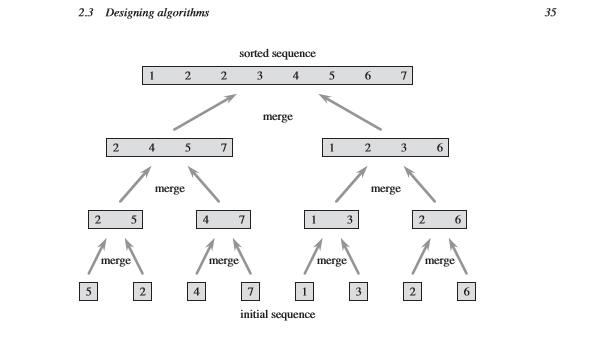
最大化矩阵括号化方案，问题仍然具有最优子结构性质。因为“剪切，粘帖”的处理方式没有变。
假设最大括号化方案能够使结果最优，则其中的划分为：A 1 A 2 … … A k A k + 1 … A j A_1A_2\dots \dots A_kA_{k+1}\dots A_j A 1 A 2 … … A k A k + 1 … A j A 1 A 2 … A i A i + 1 … … A j A_1A_2\dots A_iA_{i+1}\dots \dots A_j A 1 A 2 … A i A i + 1 … … A j
贪心算法的原理是：我们不必计算原问题的最优解，总是可以在求解子问题的时候划分出A i A i + 1 … A j A_iA_{i+1}\dots A_j A i A i + 1 … A j p i − 1 p k p j p_{i-1}p_{k}p_{j} p i − 1 p k p j
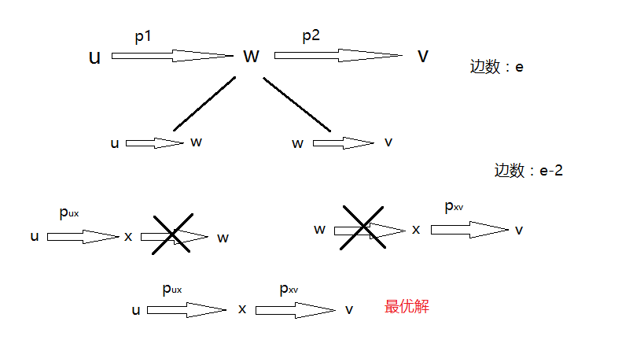
虽然我们求出来的最优解如红色的图，但很有可能p u − 1 p w p v < p u − 1 p x p v p_{u-1}p_wp_v<p_{u-1}p_xp_v p u − 1 p w p v < p u − 1 p x p v
原因如下：最优解的函数表达式与贪心中的p k p_k p k
编程验证：
贪心策略如下：
1 2 3 4 5 6 7 8 9 10 11 12 13 14 15 16 17 18 19 20 21 22 23 24 25 26 27 28 29 //下面这是用错误的贪心算法求解的问题： Matrix_Chain Matrix_Chain_Order_greedy(int p[]) { int N=n-1; Matrix_Chain T_greedy; for (int i=0;i<N;i++) T_greedy.m[i][i]=0; for (int l=2;l<=N;l++) { for (int i=1;i<=N-l+1;i++) { int j=i+l-1; T_greedy.m[i-1][j-1]=INFINITY; int q_min=INFINITY; for (int k=i;k<=j-1;k++) { int q=T_greedy.m[i-1][k-1]+T_greedy.m[k][j-1]+p[i-1]*p[k]*p[j]; if (q_min>p[i-1]*p[k]*p[j]) { q_min=p[i-1]*p[k]*p[j]; T_greedy.m[i-1][j-1]=q; T_greedy.s[i-1][j-1]=k-1; } } } } return T_greedy; }
结果如图：
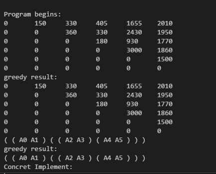
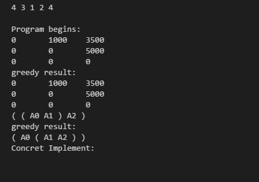
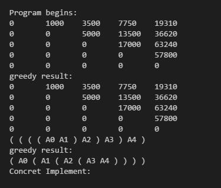
很显然地看出，greedy_result得到了不同的括号化结果。
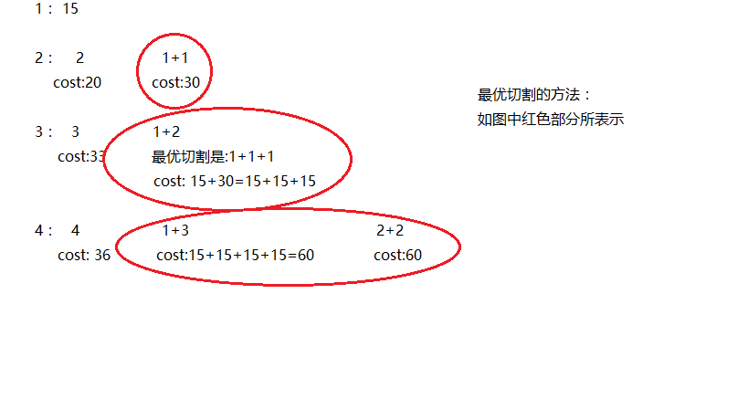
如果我们限制，在r=4的时候，只能够切割成两段长度为1的钢条，则r=4的时候，最优切割方案1+1+1+1无法成立。
该问题可以看成是一种矩阵链乘法的变形，当佣金C k C_k C k
具体的描述见下图：
合并问题的代价，可以描述为C k C_k C k
解决每个问题所需要的代价为R k R_k R k
总代价的递推式为：R k + C k R_k+C_k R k + C k R k 2 + C k 2 R_{k2}+C_{k_2} R k 2 + C k 2
如果C k C_k C k f ( k ) f(k) f ( k )
R k + f ( k ) R_k+f(k) R k + f ( k )
动态规划算法只能保证R k R_k R k f ( k ) f(k) f ( k )
最长公共子序列的求解，如下图所示：
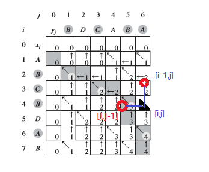
可以看到，最长公共子序列的依赖关系如上图所示，[i,j]的值取决于{[i-1,j-1],[i,j-1],[i-1,j]}
实现方法如下：
LCS_len.h
1 2 3 4 5 6 7 8 9 10 11 12 13 14 15 16 17 18 19 20 21 22 23 24 25 26 27 28 29 30 31 32 33 34 35 36 37 38 39 40 41 42 43 44 45 46 47 48 49 50 51 52 53 54 55 56 57 58 59 60 61 62 63 wchar_t b[N+1][M+1]={'S' }; //表示起点start int c[N+1][M+1]={0}; wchar_t northwest=L'\\' , up=L'|' , leftway=L'-' ; void LCS_length(char *x,char *y) { for (int i1=0;i1<=N;i1++) b[i1][0]='S' ; for (int j1=0;j1<=M;j1++) b[0][j1]='S' ; for (int i=1;i<=N;i++) { for (int j=1;j<=M;j++) { if (x[i]==y[j]) { c[i][j]=c[i-1][j-1]+1; b[i][j]=northwest; //Northwest往左上 } else { if (c[i-1][j]>=c[i][j-1]) //c[i-1][j-1] 过渡到 c[i][j]，需要将c[i-1][j]和c[i][j-1]比较大小 //取较大的那一个值 { c[i][j]=c[i-1][j]; b[i][j]=up; //Up往上 } else { c[i][j]=c[i][j-1]; b[i][j]=leftway; //Left往左 } } } } } void Print_lcs(char *x,int i,int j) { if (i==0||j==0) return ; if (b[i][j]==northwest) { Print_lcs(x,i-1,j-1); std::cout<<x[i]<<" "; //当然，按y[j]输出也没有问题，因为是公共序列嘛！ } else { if(b[i][j]==up) Print_lcs(x ,i-1,j); else Print_lcs(x,i,j-1); } }
** 主函数LCS.cpp **
1 2 3 4 5 6 7 8 9 10 11 12 13 14 15 16 17 18 19 20 21 22 23 24 25 26 27 28 29 30 31 32 33 int main() { setlocale(LC_ALL,"chs" ); char x[N+1]={'\0' ,'A' ,'B' ,'C' ,'B' ,'D' ,'A' ,'B' }; char y[M+1]={'\0' ,'B' ,'D' ,'C' ,'A' ,'B' ,'A' }; LCS_length(x,y); Print_lcs(x,N,M); std::cout<<std::endl; std ::cout<<"Gene Distance:" <<std::endl; for(int i=0;i<=N;i++) { for(int j=0;j<=M;j++) { std ::wcout<<b[i][j]<<"\t"; } std::cout<<std::endl; for(int j=0;j<=M;j++) { std::cout<<c[i][j]<<"\t"; } std::cout<<std::endl; } system("pause"); return 0; }
实现结果输出
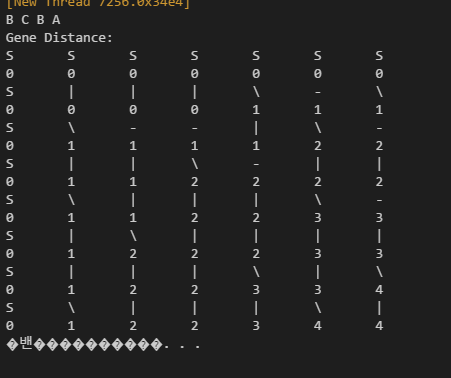
运行上述代码，可以知道<1,0,0,1,0,1,0,1>和<0,1,0,1,1,0,1,1,0>的一个LCS为：
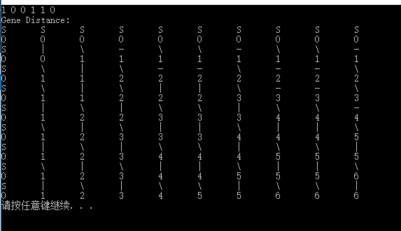
lcs_len2.h
1 2 3 4 5 6 7 8 9 10 11 12 13 14 15 16 17 18 19 20 21 22 23 24 25 26 27 28 29 30 31 32 33 34 35 36 37 38 39 40 41 void lcs_len_withouthelp(char *x, char *y,int c[][M+1]) { for (int i=1;i<=N;i++) { for (int j=1;j<=M;j++) { if (x[i]==y[j]) c[i][j]=c[i-1][j-1]+1; else { if (c[i-1][j]>=c[i][j-1]) c[i][j]=c[i-1][j]; else c[i][j]=c[i][j-1]; } } } } void print_LCS_withouthelp(int c[][M+1],char *x,int i,int j) { if (i==0||j==0) return ; if (c[i][j]==c[i-1][j-1]+1) { print_LCS_withouthelp(c,x,i-1,j-1); std::cout<<x[i]<<" "; } else { if(c[i-1][j]>=c[i][j-1]) print_LCS_withouthelp(c,x ,i-1,j); else print_LCS_withouthelp(c,x,i,j-1); } }
LCS2.CPP
1 2 3 4 5 6 7 8 9 10 11 int main() { char x[N+1]={'\0' ,'A' ,'B' ,'C' ,'B' ,'D' ,'A' ,'B' }; char y[M+1]={'\0' ,'B' ,'D' ,'C' ,'A' ,'B' ,'A' }; int c[N+1][M+1]={0}; lcs_len_withouthelp(x,y,c); print_LCS_withouthelp(c,x,N,M); }
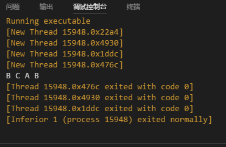
基本思路：
一、初始化
二、带备忘的值，执行判断
1 2 3 4 if (i==0||j==0) c[i][j]=0; else if (c[i][j]>0) return c[i][j]; //带备忘的return ,执行输出
实现过程
1 2 3 4 5 6 7 8 9 10 11 12 13 14 15 16 17 18 19 20 21 22 23 24 25 26 27 28 29 30 31 32 33 34 35 36 37 38 39 40 41 using namespace std; int Max(int a,int b) { return a>b?a:b; } //数组初始化为0的方法： //只要定义第一个元素为0，后面就劝为0了 //int c[N+1][M+1]={0} int lcs_length(char *x,char *y,int c[][M+1],int i,int j) //这里，i,j指下标，就是第几个数 //在递归的时候，从最后一个数，就是第N，M个数算起 { if (i==0||j==0) c[i][j]=0; else if (c[i][j]>0) return c[i][j]; else { if (x[i]==y[j]) c[i][j]=lcs_length(x,y,c,i-1,j-1)+1; else c[i][j]=Max(lcs_length(x,y,c,i-1,j),lcs_length(x,y,c,i,j-1)); } return c[i][j]; } int main() { char x[N+1] = {'\0' ,'A' ,'B' ,'C' ,'B' ,'D' ,'A' ,'B' }; char y[M+1] = {'\0' ,'B' ,'D' ,'C' ,'A' ,'B' ,'A' }; int c[N+1][M+1]={0}; cout<<lcs_length(x,y,c,N,M); }
实际上，根据c[i][j],c[i-1][j-1],c[i][j-1],c[i-1][j]的依赖关系，可以知道：
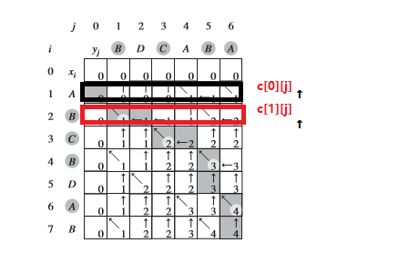
1 2 3 4 5 6 7 8 9 10 11 12 13 14 15 16 17 18 19 20 21 22 23 24 25 26 27 28 29 30 31 32 33 34 35 36 37 38 39 40 41 42 43 44 45 46 47 48 using namespace std; //仅有的二维数组： /*用第0行作为上一行，第1行作为当前行，一次循环后，把旧的第1 行(当前行)的所有数据转移给新的上一行，而新的当前行用来存储新的当前行数据，这样不断循环，最终 得到LCS长度*/ void copy(int res[][M+1]) { for (int i=0;i<=M;i++) res[0][i]=res[1][i]; } void LCS_length_2mn(char *x,char *y) { int res[2][M+1]={0}; for (int i=1;i<=N;i++) { for (int j=1;j<=M;j++) { if (x[i]==y[j]) res[1][j]=res[0][j-1]+1; else { if (res[0][j]>=res[1][j-1]) res[1][j]=res[0][j]; else res[1][j]=res[1][j-1]; } } copy(res); } cout<<"first line: " <<res[0][M]<<endl; cout<<"second line: "<<res [1][M]<<endl; } int main() { //char x[N+1] = {'\0','A','B','C','B','D','A','B'}; //char y[M+1] = {'\0','B','D','C','A','B','A'}; char x[M+1] = {'\0','1','0','0','1','0','1','0','1'}; char y[N+1] = {'\0','0','1','0','1','1','0','1','1','0'}; LCS_length_2mn(x,y); return 0; }
最后输出结果为6，公共子序列为{1，0，1，0，1，1}
具体实现方法：
1 2 3 4 5 6 7 8 9 10 11 12 13 14 15 16 17 18 19 20 21 22 23 24 25 26 27 28 29 30 31 using namespace std; int PARTITION(int A[],int p,int r) { int x=A[r]; int i=p-1; for (int j=p;j<=r-1;j++) { if (A[j]<=x) { i++; swap(A[i],A[j]); } } swap(A[i+1],A[r]); return i+1; } void QUICKSORT(int A[],int p,int r) { if (p<r) { int q=PARTITION(A,p,r); QUICKSORT(A,p,q-1); QUICKSORT(A,q+1,r); } }
1 2 3 4 5 6 7 8 9 10 11 12 13 14 15 16 17 18 19 20 21 22 23 24 25 26 27 28 29 30 31 32 33 34 35 36 37 38 39 40 41 42 43 44 45 46 47 48 49 50 51 52 53 54 55 56 57 58 59 60 61 62 63 wchar_t b[N+1][M+1]={'S' }; //表示起点start int c[N+1][M+1]={0}; wchar_t northwest=L'\\' , up=L'|' , leftway=L'-' ; void LCS_length(int *x,int *y) { for (int i1=0;i1<=N;i1++) b[i1][0]='S' ; for (int j1=0;j1<=M;j1++) b[0][j1]='S' ; for (int i=1;i<=N;i++) { for (int j=1;j<=M;j++) { if (x[i]==y[j]) { c[i][j]=c[i-1][j-1]+1; b[i][j]=northwest; //Northwest往左上 } else { if (c[i-1][j]>=c[i][j-1]) //c[i-1][j-1] 过渡到 c[i][j]，需要将c[i-1][j]和c[i][j-1]比较大小 //取较大的那一个值 { c[i][j]=c[i-1][j]; b[i][j]=up; //Up往上 } else { c[i][j]=c[i][j-1]; b[i][j]=leftway; //Left往左 } } } } } void Print_lcs(int *x,int i,int j) { if (i==0||j==0) return ; if (b[i][j]==northwest) { Print_lcs(x,i-1,j-1); std::cout<<x[i]<<" "; //当然，按y[j]输出也没有问题，因为是公共序列嘛！ } else { if(b[i][j]==up) Print_lcs(x ,i-1,j); else Print_lcs(x,i,j-1); } }
1 2 3 4 5 6 7 8 9 10 11 12 13 14 15 16 17 18 19 20 21 22 23 24 25 26 27 28 29 30 31 32 33 34 35 36 37 38 39 int main() { setlocale(LC_ALL,"chs" ); srand((unsigned)time(NULL)); int x[N+1]={0}; int y[N+1]={0}; //一般，第一个位置放0，第二个位置放1 //i的循环，从i=1 to N for (int i=1;i<=N;i++) { y[i]=x[i]=rand()%10+1; std::cout<<x[i]<<" "; } std::cout<<std::endl; QUICKSORT(y,0,N); LCS_length(x ,y); Print_lcs(x,N,N); std::cout<<std::endl; std ::cout<<"15-8" <<std::endl; for(int i=0;i<=N;i++) { for(int j=0;j<=N;j++) std ::wcout<<b[i][j]<<"\t"; std::cout<<std::endl; for(int j=0;j<=N;j++) std::cout<<c[i][j]<<"\t"; std::cout<<std::endl; } system("pause"); return 0; }
输出结果：
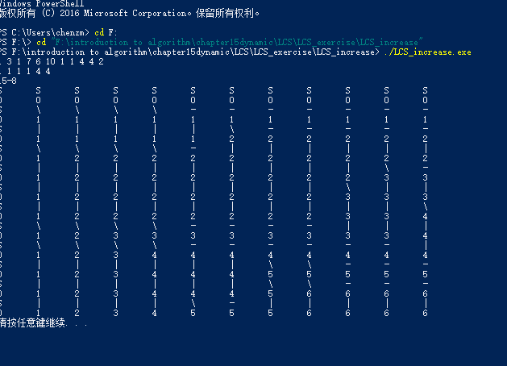
可以把算法的运行时间缩短到O ( n l g n ) O(nlgn) O ( n l g n )
具体的实现方法如下图：
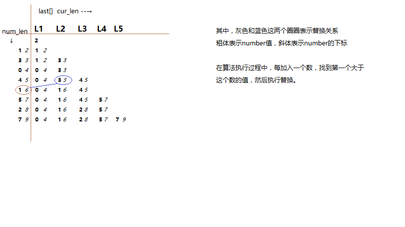
可能常见的错误：
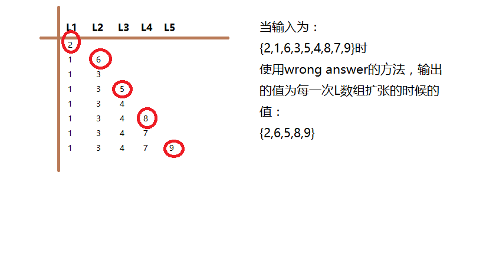
1 2 3 4 5 6 7 8 9 10 11 12 13 14 15 16 17 18 19 20 21 22 23 //使用二分查找寻找合适的位置 //要插入的位置，是比该数大的第一个数值 int bisearch(int *b,int len,int w) { int left=0,right=len-1; int mid; while (left<=right) { mid=left+(right-mid)/2; if (b[mid]>w) right=mid-1; else if (b[mid]<w) left=mid+1; else return mid; } return left; } //二分查找最后返回的值，是b[mid+1] //当然，如果找不到该值，最后返回的是b[0+1]，或者是b[len+1]
1 2 3 4 5 6 7 8 9 10 11 12 13 14 15 16 17 18 19 20 21 22 23 24 25 26 27 28 29 30 31 32 33 34 35 36 37 38 39 40 41 42 43 44 45 46 int B[N]; int len; //用来标注数组B中元素的个数 struct node { int data; int prev; //存放上一个prev的下标 }; int LIS(int *array,node *result,int n) { int len=1; //B[]数组的长度 B[0]=array[0]; int i,pos=0; result[0].data=B[0]; result[0].prev=-1; for (int i=1;i<n;i++) //为什么下标从1开始？ //[i]要和[i-1]比较，然后执行替换，原来array[0]作为初始值 { if (array[i]>B[len-1]) { B[len]=array[i]; result[len].data=array[i]; result[len].prev=len-1; len++; } else { int pos=bisearch(B,len,array[i]); B[pos]=array[i]; result[pos+1].prev=pos; } } return len; } //这里，result提供用于回溯的另一组数值
1 2 3 4 5 6 7 8 9 10 11 12 13 14 15 16 17 18 19 20 21 22 23 24 25 26 27 28 29 30 31 32 33 34 35 36 using namespace std; int main() { int array[N]={2,1,6,3,5,4,8,7,9}; node *result=new node[N+1]; int cur_len=LIS(array,result,N); cout<<cur_len<<endl; for(int i=0;i<cur_len ;i++) { cout<<B[i]<<" "; } cout<<endl; cout<<"wrong answer:"<<endl; int temp[cur_len]={0}; int id=cur_len-1; for(int i=cur_len-1;i>=0;i--) { temp[i]=result[id].data; id=result[id].prev; } cout<<temp[0]<<" "; for(int i=0;i<cur_len;i++) { if(i>0 && temp[i]>=temp[i-1]) cout<<temp[i]<<" "; } delete[] result; return 0; }
由最优二叉搜索树期望搜索代价的递推公式：
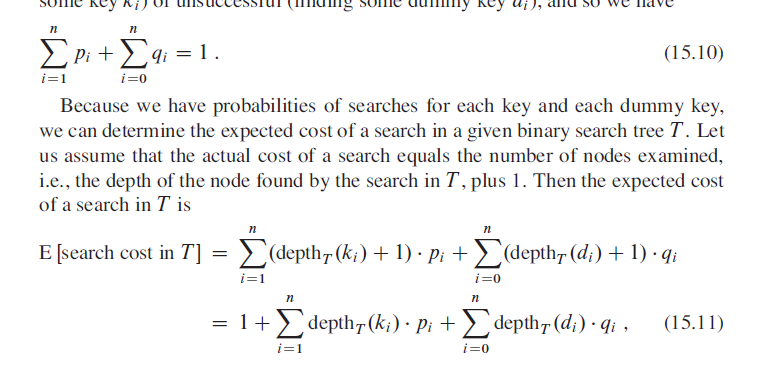
因此，若k r k_r k r k i ⋯ k j k_i \cdots k_j k i ⋯ k j e e e k r k_r k r + 1 +1 + 1
而w ( i , j ) = ∑ l = i j p l + ∑ l = i − 1 j q l w(i,j)=\sum_{l=i}^{j}p_l+\sum_{l=i-1}^{j}q_l w ( i , j ) = ∑ l = i j p l + ∑ l = i − 1 j q l
根据期望的公式可以这么理解：e [ i , j ] e[i,j] e [ i , j ] ( 15.11 ) (15.11) ( 1 5 . 1 1 ) + 1 +1 + 1 E [ s e a r c h c o s t i n T ] E[search \, cost \, in \, T] E [ s e a r c h c o s t i n T ] w ( i , j ) = ∑ l = i j p l + ∑ l = i − 1 j q l w(i,j)=\sum_{l=i}^{j}p_l+\sum_{l=i-1}^{j}q_l w ( i , j ) = ∑ l = i j p l + ∑ l = i − 1 j q l
同时，还要加上根节点的期望p r p_r p r
e [ i , j ] = p r + ( e [ i , r − 1 ] + w ( i , r − 1 ) ) + ( e [ r + 1 , j ] + w ( r + 1 , j ) ) e[i,j]=p_r+(e[i,r-1]+w(i,r-1))+(e[r+1,j]+w(r+1,j)) e [ i , j ] = p r + ( e [ i , r − 1 ] + w ( i , r − 1 ) ) + ( e [ r + 1 , j ] + w ( r + 1 , j ) ) w ( i , j ) = w ( i , r − 1 ) + p r + w ( r + 1 , j ) w(i,j)=w(i,r-1)+p_r+w(r+1,j) w ( i , j ) = w ( i , r − 1 ) + p r + w ( r + 1 , j )
因此e [ i , j ] e[i,j] e [ i , j ] e [ i , j ] = e [ i , r − 1 ] + e [ r + 1 , j ] + w ( i , j ) e[i,j]=e[i,r-1]+e[r+1,j]+w(i,j) e [ i , j ] = e [ i , r − 1 ] + e [ r + 1 , j ] + w ( i , j )
e [ i , j ] = { q i − 1 j=i-1 min i ≤ r ≤ j ( e [ i , r − 1 ] + e [ r + 1 , j ] + w ( i , j ) ) i<=j e[i,j]= \begin{cases} q_{i-1}& \text{j=i-1}\\ \min \limits_{i \leq r \leq j} (e[i,r-1]+e[r+1,j]+w(i,j))& \text{i<=j} \end{cases} e [ i , j ] = { q i − 1 i ≤ r ≤ j min ( e [ i , r − 1 ] + e [ r + 1 , j ] + w ( i , j ) ) j=i-1 i<=j
实现最优二叉搜索树，对w，e和root的表单更新如下：
与矩阵链乘法类似，相应的结构如下图：
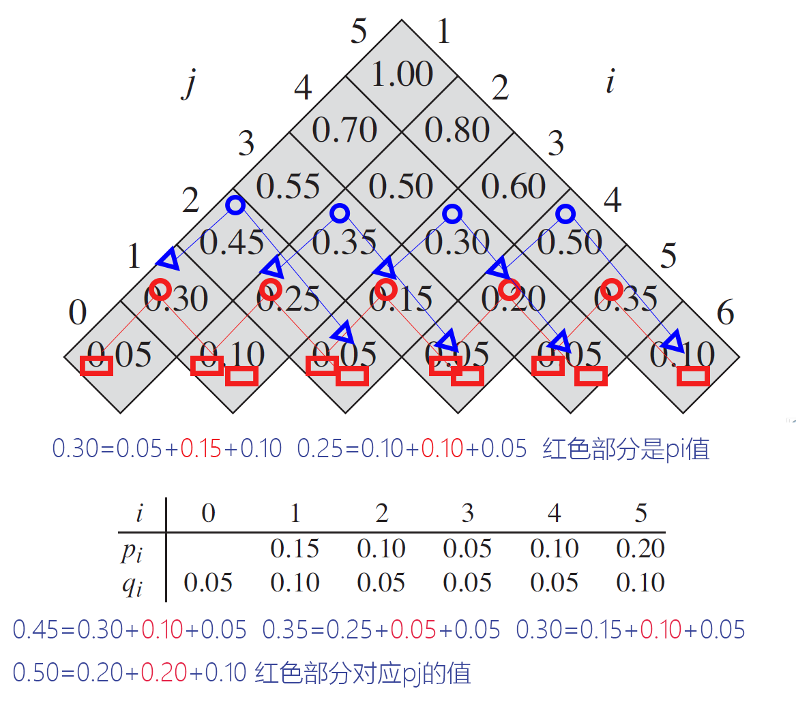
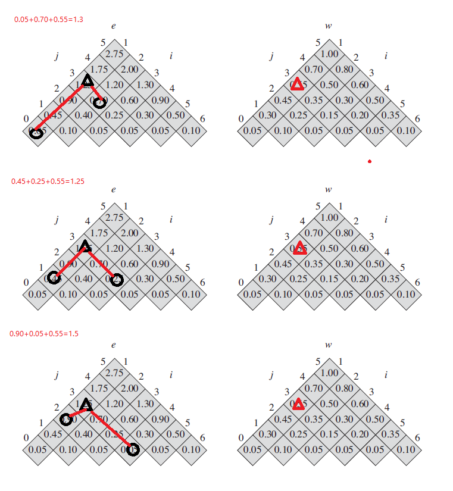
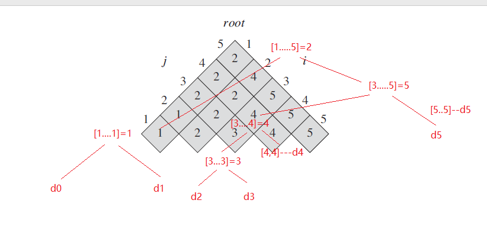
1 2 3 4 5 6 7 8 9 10 11 12 13 14 15 16 17 18 19 20 21 22 23 24 25 26 27 28 29 30 31 32 33 34 35 36 37 38 39 40 41 42 43 44 45 46 47 48 49 50 51 52 53 54 55 56 57 58 59 60 61 62 63 64 65 66 67 68 69 70 71 72 73 74 75 76 77 78 using namespace std; struct e_root { vector<vector<double> > e; vector<vector<int> > root; e_root() { e.resize(n+2); for (int i=0;i<n+2;i++) e[i].resize(n+1); root.resize(n+1); for (int j=0;j<n+1;j++) root[j].resize(n+1); } }; e_root Optimal_bst(double p[],double q[]) { e_root Table; double w[n+2][n+1]={0}; //w[][]用来计算概率值，更多是辅助数组 for (int i=1;i<=n+1;i++) { Table.e[i][i-1]=q[i-1]; w[i][i-1]=q[i-1]; } for (int l=1;l<=n;l++) { for (int i=1;i<=n-l+1;i++) { int j=i+l-1; Table.e[i][j]=INFINITY; w[i][j]=w[i][j-1]+p[j]+q[j]; for (int r=i;r<=j;r++) { double tmp=Table.e[i][r-1]+Table.e[r+1][j]+w[i][j]; //递归公式 if (tmp<Table.e[i][j]) { Table.e[i][j]=tmp; Table.root[i][j]=r; } } } } return Table; } //输出BST的值 void Construct_Optimal_BST(e_root Table,int i,int j) { int cur_root=Table.root[i][j]; if (i==1&&j==n) cout<<"k" <<cur_root<<" is root "<<endl; if(i==cur_root ) cout<<"d" <<i-1<<" is k"<<cur_root<<" left child "<<endl; else { cout<<"k"<<Table.root[i ][cur_root-1]<<" is " <<"k" <<cur_root<<" left child "<<endl; Construct_Optimal_BST(Table,i,cur_root -1); } if (j==cur_root) cout<<"d" <<j<<" is "<<"k"<<cur_root<<" right child "<<endl; else { cout<<"k"<<Table.root[cur_root+1][j ]<<" is k" <<cur_root<<" right child "<<endl; Construct_Optimal_BST(Table,cur_root +1,j); } }
1 2 3 4 5 6 7 8 9 10 11 12 13 14 15 int main() { double p[n+1]={0,0.15,0.10,0.05,0.10,0.20}; double q[n+2]={0.05,0.10,0.05,0.05,0.05,0.10}; e_root Table=Optimal_bst(p,q); cout<<"BST result " <<endl; Construct_Optimal_BST(Table,1,n); cout<<endl ; cout<<"cost: " <<Table.e[1][n]<<endl; return 0; }
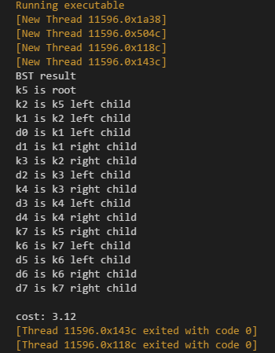
如果Optimal_bst不维护表w [ i , j ] w[i,j] w [ i , j ] w ( i , j ) w(i,j) w ( i , j ) O ( n ) O(n) O ( n ) w [ i , j ] w[i,j] w [ i , j ] O ( n 3 ) O(n^3) O ( n 3 ) c c c 1 2 + 2 2 + ⋯ + ( n − 1 + c ) 2 + ( n + c ) 2 = k × 1 / 6 × n ( n + 1 ) ( 2 n + 1 ) 1^2+2^2+\cdots +(n-1+c)^2+(n+c)^2=k \times 1/6 \times n(n+1)(2n+1) 1 2 + 2 2 + ⋯ + ( n − 1 + c ) 2 + ( n + c ) 2 = k × 1 / 6 × n ( n + 1 ) ( 2 n + 1 )
和原来的求和比，相差常数项。
K n u t h [ 212 ] Knuth[212] K n u t h [ 2 1 2 ] 1 ≤ i ≤ j ≤ n 1 \leq i \leq j \leq n 1 ≤ i ≤ j ≤ n r o o t [ i , j − 1 ] ≤ r o o t [ i , j ] ≤ r o o t [ i + 1 , j ] root[i,j-1] \leq root[i,j] \leq root[i+1,j] r o o t [ i , j − 1 ] ≤ r o o t [ i , j ] ≤ r o o t [ i + 1 , j ] θ ( n 2 ) θ(n^2) θ ( n 2 )
这个公式证明如下：
T ( n ) = 2 n + ∑ l = 1 n ∑ i = 1 n − l + 1 ( r o o t ( i + 1 , i + l − 1 ) − r o o t ( i , i + l − 2 ) ) T(n)=2n+\sum_{l=1}^{n} \sum_{i=1}^{n-l+1} (root(i+1,i+l-1)-root(i,i+l-2)) T ( n ) = 2 n + ∑ l = 1 n ∑ i = 1 n − l + 1 ( r o o t ( i + 1 , i + l − 1 ) − r o o t ( i , i + l − 2 ) ) = 2 n + ∑ l = 1 n ( r o o t ( 2 , l ) − r o o t ( 1 , l − 1 ) + r o o t ( 3 , l + 1 ) − r o o t ( 2 , l ) + ⋯ =2n+\sum_{l=1}^n(root(2,l)-root(1,l-1)+root(3,l+1)-root(2,l)+\cdots = 2 n + ∑ l = 1 n ( r o o t ( 2 , l ) − r o o t ( 1 , l − 1 ) + r o o t ( 3 , l + 1 ) − r o o t ( 2 , l ) + ⋯ + r o o t ( n − l + 2 , n ) − r o o t ( n − l + 1 , n − 1 ) ) +root(n-l+2,n)-root(n-l+1,n-1)) + r o o t ( n − l + 2 , n ) − r o o t ( n − l + 1 , n − 1 ) ) = 2 n + ∑ l = 1 n ( r o o t ( n − l + 2 ) − r o o t ( 1 , l − 1 ) ) =2n+\sum_{l=1}^{n}(root(n-l+2)-root(1,l-1)) = 2 n + ∑ l = 1 n ( r o o t ( n − l + 2 ) − r o o t ( 1 , l − 1 ) ) ≤ 2 n + ∑ l = 1 n ( n ) ≤ 2 n + n 2 = O ( n 2 ) \leq 2n+ \sum_{l=1}^{n}(n) \leq 2n+n^2 = O(n^2) ≤ 2 n + ∑ l = 1 n ( n ) ≤ 2 n + n 2 = O ( n 2 )
算法实现过程：
1、问题规模最小的时候，i = = j i==j i = = j [ i ] [i] [ i ]
1 2 3 4 5 if (i==j) //在原来的公式中，让r用j来代替就可以了，得到规模最小的时候的求值表达式{ Table.root[i][j]=j; Table.e[i][j]=Table.e[i][j-1]+Table.e[j+1][j]+w[i][j]; }
2、其余的问题规模，由于r r r r o o t [ i , j − 1 ] ≤ r ≤ r o o t [ i + 1 , j ] root[i,j-1] \leq r \leq root[i+1,j] r o o t [ i , j − 1 ] ≤ r ≤ r o o t [ i + 1 , j ] r o o t root r o o t r r r r o o t [ i , j − 1 ] ⋯ r o o t [ i + 1 , j ] root[i,j-1] \cdots root[i+1,j] r o o t [ i , j − 1 ] ⋯ r o o t [ i + 1 , j ] T a b l e . r o o t [ i ] [ j ] = r Table.root[i][j]=r T a b l e . r o o t [ i ] [ j ] = r
1 2 3 4 5 6 7 8 9 10 11 12 else { for (int r=Table.root[i][j-1];r<=Table.root[i+1][j];r++) { double tmp=Table.e[i][r-1]+Table.e[r+1][j]+w[i][j]; if (tmp<Table.e[i][j]) { Table.e[i][j]=tmp; Table.root[i][j]=r; } } }
算法实现过程：
1 2 3 4 5 6 7 8 9 10 11 12 13 14 15 16 17 18 19 20 21 22 23 24 25 26 27 28 29 30 31 32 33 34 35 36 37 38 39 40 41 42 43 44 45 46 47 48 49 50 51 52 53 54 55 56 57 58 59 60 61 62 63 64 65 66 67 68 69 70 71 72 73 74 75 76 77 78 79 80 81 82 83 84 85 86 87 88 89 90 91 92 93 94 95 using namespace std; struct e_root { vector<vector<double> > e; vector<vector<int> > root; e_root() { e.resize(n+2); for (int i=0;i<n+2;i++) e[i].resize(n+1); root.resize(n+1); for (int j=0;j<n+1;j++) root[j].resize(n+1); } }; e_root Optimal_bst(double p[],double q[]) { e_root Table; double w[n+2][n+1]={0}; //w[][]用来计算概率值，更多是辅助数组 for (int i=1;i<=n+1;i++) { Table.e[i][i-1]=q[i-1]; w[i][i-1]=q[i-1]; } for (int l=1;l<=n;l++) { for (int i=1;i<=n-l+1;i++) { int j=i+l-1; Table.e[i][j]=INFINITY; w[i][j]=w[i][j-1]+p[j]+q[j]; /*for (int r=i;r<=j;r++) { double tmp=Table.e[i][r-1]+Table.e[r+1][j]+w[i][j]; //递归公式 if (tmp<Table.e[i][j]) { Table.e[i][j]=tmp; Table.root[i][j]=r; } }*/ if (i==j) { Table.root[i][j]=j; Table.e[i][j]=Table.e[i][j-1]+Table.e[j+1][j]+w[i][j]; } else { for (int r=Table.root[i][j-1];r<=Table.root[i+1][j];r++) { double tmp=Table.e[i][r-1]+Table.e[r+1][j]+w[i][j]; if (tmp<Table.e[i][j]) { Table.e[i][j]=tmp; Table.root[i][j]=r; } } } } } return Table; } //输出BST的值 void Construct_Optimal_BST(e_root Table,int i,int j) { int cur_root=Table.root[i][j]; if (i==1&&j==n) cout<<"k" <<cur_root<<" is root "<<endl; if(i==cur_root ) cout<<"d" <<i-1<<" is k"<<cur_root<<" left child "<<endl; else { cout<<"k"<<Table.root[i ][cur_root-1]<<" is " <<"k" <<cur_root<<" left child "<<endl; Construct_Optimal_BST(Table,i,cur_root -1); } if (j==cur_root) cout<<"d" <<j<<" is "<<"k"<<cur_root<<" right child "<<endl; else { cout<<"k"<<Table.root[cur_root+1][j ]<<" is k" <<cur_root<<" right child "<<endl; Construct_Optimal_BST(Table,cur_root +1,j); } }
1 2 3 4 5 6 7 8 9 10 11 12 13 14 15 int main() { double p[n+1]={0,0.04,0.06,0.08,0.02,0.10,0.12,0.14}; double q[n+2]={0.06,0.06,0.06,0.06,0.05,0.05,0.05,0.05}; e_root Table=Optimal_bst(p,q); cout<<"BST result " <<endl; Construct_Optimal_BST(Table,1,n); cout<<endl ; cout<<"cost: " <<Table.e[1][n]<<endl; return 0; }


 微信
微信 支付宝
支付宝